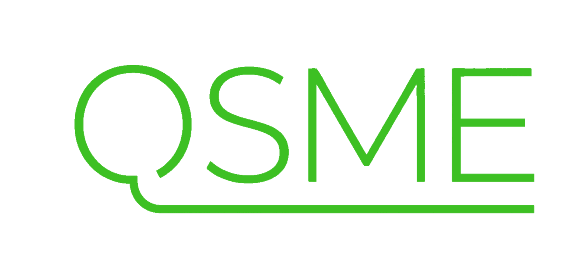

Security questionnaireRow 1
Is QSME
ISO 27001
certified?
ISO 27001
certified?
Y
N
Evidenceqsme.build/security
No.
qsme.build/security
qsme.build/security
live page · 4 Oct 2026


Same answer. All 15 languages.
Also no.
Here’s what is in place.
In progress. Not certified.
Said plainly.
Said plainly.
“
We do not displaybadges, logos orratings we havenot earned.
— qsme.build/security

Estimating and tendering software
for construction organisations.
for construction organisations.
Book a 30-minute demo at qsme.build